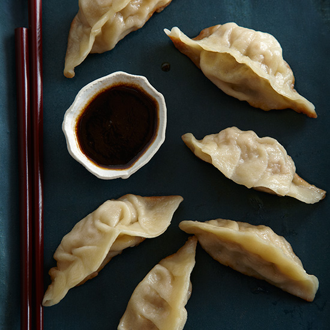

Just Dumpling
Just Dumpling
one of the Delicious food
HOW TO MAKE THIS RECIPE
- Put the flour in a medium bowl. Add the water in a steady stream, stirring until a raggy dough forms. Turn the dough out onto a work surface and knead until smooth, 5 minutes. Sprinkle the dough with flour, cover loosely with plastic wrap and let stand for 15 minutes.
- In a large bowl, knead the pork with the kimchi, ginger, garlic, egg and salt.
- Line a baking sheet with wax paper and sprinkle with flour. Quarter the dough. On a floured work surface, roll each piece into a 12-inch rope. Cut each rope into 12 pieces and roll into balls; sprinkle with flour. Roll out 6 balls at a time to 3 1/2-inch rounds; brush off the excess flour. Spoon 1 tablespoon of the filling onto the center of each round. Bring up the sides of the wrapper; press and pleat the edges to seal in the filling. Lift each dumpling by the pleated edge, transfer to the baking sheet and press down lightly to flatten.
- In a nonstick skillet, heat 2 tablespoons of the oil. Arrange half of the dumplings in the skillet, pleated edge up. Cook over high heat until the bottoms are lightly browned, 2 minutes. Add 1/2 cup of water, cover and cook until the filling is cooked through, 5 minutes. Uncover and cook until the bottoms are well browned, 1 minute; transfer to a plate. Cook the remaining dumplings and serve.
DIY DUMPLING
